Las pseudoclases se utilizan para hacer referencia a elementos HTML que tengan un cierto comportamiento concreto. Se definen añadiendo 2 puntos ( : ) antes del nombre de la pseudoclase concreta.
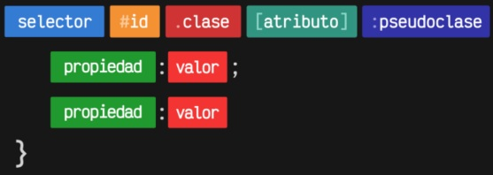
Esquema sintaxis pseudoclases
De esta forma, podremos seleccionar elementos que en principio parecen iguales, pero tienen diferentes características de comportamiento.
Pseudoclases de hijos
Lo usaremos para poder seleccionar cualquier hijo de cualquier elemento sea del tipo que sea.
:first-child Va a seleccionar el primer hijo.
:last-child Va a seleccionar el último hijo.
Ejemplo:
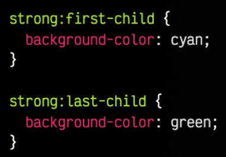
Ejemplo pseudoclase primer y último hijo
La primera sentencia seleccionará el strong que sea primer hijo.
La segunda sentencia seleccionará el strong que sea último hijo.
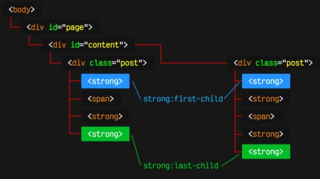
Ejemplo pseudoclase primer y último hijo
Otras pseudoclases de hijos
:nth-child(n) Selecciona el enésimo hijo dónde n va a ser un número
:nth-last-child(n) Selecciona el enésimo hijo pero empezando a contar desde el final
:nth-child(2n) Esto va a seleccionar los elementos 2*1, 2*2, 2*3, ... es decir los elementos 2, 4, 6, ... El 2 puede cambiarse y puede ser un 3 para seleccionar de 3 en 3...
:nth-child(2n+1) Esto seleccionara los elementos 2n+1, es una expresion que puede ser modificada. En este caso seleccionará los elementos 2*0+1 (el 1º), 2*1+1 (el 3º), ... Con este ejemplo seleccionamos los impares mientras que con 2n seleccionabamos los pares.
:nth-child(odd) Selecciona los elementos impares
:nth-child(even) Selecciona los elementos pares
La pseudoclase :nth-child(A) permite especificar el elemento hijo deseado, simplemente estableciendo su número en el parámetro A. No obstante, hay que tener en cuenta que el parámetro A no es sólo un número, sino que es posible escribir ciertas expresiones.
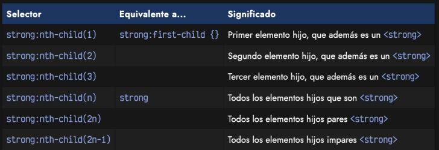
Más pseudoclases de hijo
<ul>
<li><a href="#...">Element 1</a></li> /* li:first-child a {color: red;} */ Selecciona al primer hijo li y el a lo pinta rojo
<li><a href="#...">Element 2</a></li> /* li:last-child a {color: pink;} */ Selecciona al último hijo li y el a lo pinta rosa
<li><a href="#...">Element 3</a></li> /* li:nth-child(3) a {color: yellow;} */ Selecciona al tercer hijo li y el a lo pinta amarillo
<li><a href="#...">Element 4</a></li>
</ul>
La pseudoclase funcional :nth-last-child(A) funciona de forma muy similar a la anterior, permitiendo también indicarle un parámetro A donde específicar una expresión o número para indicar el hijo concreto. La diferencia respecto a la anterior, es que comenzamos a contar desde el final.
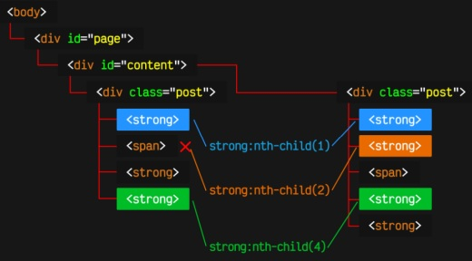
Ejemplo más pseudoclases de hijo
Pseudoclases de hijos según tipo de elemento
En los casos anteriores, seleccionamos elementos independientemente de que tipo de elemento sea. Simplemente, hacemos caso a la posición donde está ubicado. Y en algún caso, si no coincide la posición con el tipo de elemento especificado en el selector, simplemente no lo selecciona.
Una forma de actuar, quizás, más predecible para nosotros, es que queramos hacer referencia sólo a elementos del mismo tipo, ignorando el resto. Para ello, utilizaremos los selectores siguientes, análogos a los que ya hemos visto, pero haciendo referencia solo a elementos del mismo tipo.
:first-of-type Selecciona el 1º de este tipo
:last-of-type Selecciona el último de este tipo
Por ejemplo, la pseudoclase :first-of-type es la análoga a :first-child, sólo que tendrá en cuenta sólo elementos de su mismo tipo. Observa el siguiente ejemplo donde no sólo tenemos <div>, sino que también tenemos un <p>.
Ejemplo más pseudoclases de hijo según el tipo de elemento
.container div:first-of-type {...} Selecciona el primer div que sea descendiente de .container (Element 1)
.container p:first-of-type {...} Selecciona el primer p que sea descendiente de .container (Element 3)
.container :first-of-type {...} Selecciona los 2 anteriores, es decir, selecciona todos los elementos que sean 1º de su tipo (El primer div y el primer p, en este caso)
Otras pseudoclases de hijos según el tipo de elemento
:nth-of-type(n) Selecciona el enésimo elemento de dicho tipo
:nth-last-of-type(n) Selecciona el enésimo elemento de dicho tipo empezando a contar desde el final
La pseudoclase :nth-of-type(A) es la análoga a :nth-child(A). Se trata de una pseudoclase funcional que admite pasar parámetros, donde le podemos indicar un número (o cierta expresión) para ser mucho más específicos a la hora de seleccionar elementos del mismo tipo.
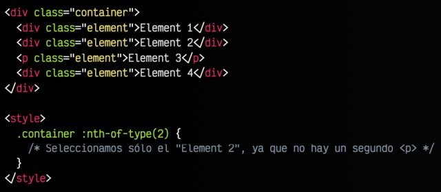
Ejemplo más pseudoclases de hijo según el tipo de elemento
La pseudoclase :nth-last-of-type(A) es la análoga a :nth-last-child(A). Veamos un nuevo ejemplo sobre el ejercicio anterior, utilizando ahora estas últimas pseudoclases que hemos visto.
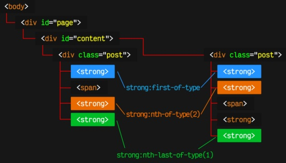
Ejemplo más pseudoclases de hijo según el tipo de elemento 3
En este gráfico, se puede ver como strong:nth-of-type(2) selecciona el segundo elemento strong en ambos casos, a pesar de que en el primero ocupa la tercera posición. En este caso se selecciona porque es el segundo elemento de su mismo tipo (<strong>).
Por otro lado, strong:nth-last-of-type(1) hace una selección de forma inversa, empezando por el último elemento, por lo que elige el último elemento.
:only-child Hijo único de cualquier tipo
:only-of-type Hijo único de ese tipo concreto
:empty Elemento sin hijos
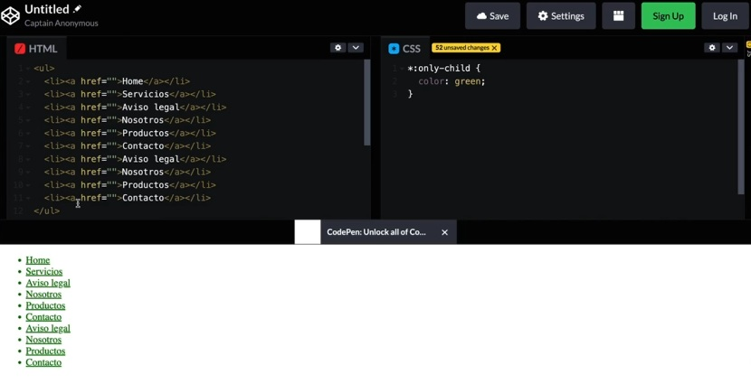
Ejemplo de only-child (Hijo único de cualquier tipo)
Hijo único son tanto el ul como los a. Cada li genera un nivel de jerarquía y cada li solo tiene un hijo que son los a, por lo tanto cada es un hijo único. En el caso de que pondríamos *:only-of-type sería exactamente igual porque dentro de cada li solamente hay un a, mientras que...
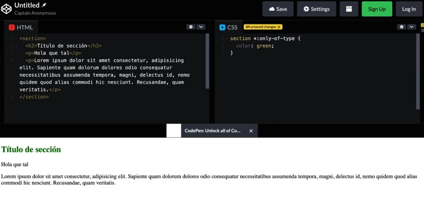
Ejemplo de only-of-type (Hijo único de ese tipo concreto)
En este caso seleccioname aquellos elementos que sean únicos de su tipo y que sean descendientes de section. Hace únicamente referencia a h2 (el único de su tipo dentro de de la jerarquía de section), porque p hay 2 (si borrasemos uno de los p seleccionaría el h2 y el p porque serían únicos de su tipo).
En este momento si usáramos :empty no seleccionaría ninguno porque todos tienen hijos. Por ejemplo un p tiene contenido que es el texto. Una img, que es una etiqueta vacía, si sería seleccionada. :empty se usa muy poco o en otros contextos.
Pseudoclases de interacción
Las pseudoclases de interacción se pueden utilizar en cualquier elemento, aunque lo más frecuente es usarlo en elementos interactivos como enlaces, botones o similares, y pueden seleccionar elementos cuando ocurre una cierta interacción por parte del usuario en ellos.
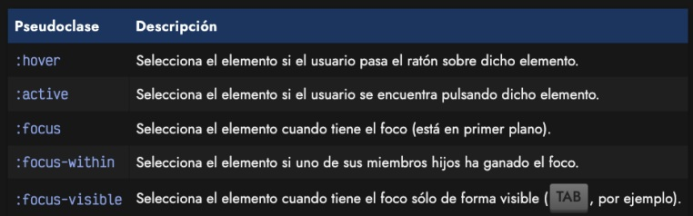
Tipos de pseudoclases de interacción
:hover La primera de ellas, :hover, es muy útil e interesante, ya que permite aplicar estilos a un elemento justo cuando el usuario pasa el ratón sobre él. Es una de las pseudoclases más utilizadas. En mobile no existe porque no tienes un puntero, sería otra pseudoclase diferente.
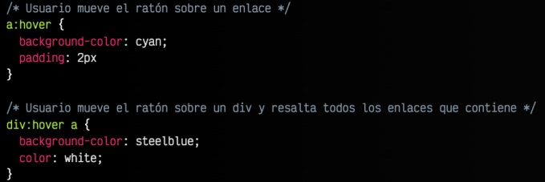
Pseudoclase de interacción hover
Otro ejemplo:
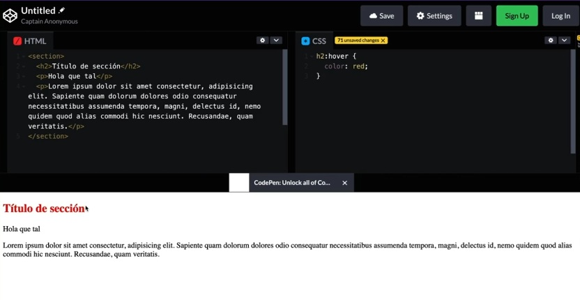
Ejemplo de uso de pseudoclase de interacción hover
Cuando paso el ratón por encima del título h2 cambia su color a rojo, como es un elemento de bloque aunque lo pase por la derecha se marca de rojo.
Otro ejemplo, si en vez de h2:hover hacemos section:hover h2 {...} y pasamos el ratón por cualquier lugar del section (que envuelve un h2 y dos p) el h2 cambiará el color a rojo.
:active Por otro lado, la segunda pseudoclase, :active, permite resaltar los elementos que se encuentran activos, o lo que es lo mismo, elementos que están siendo pulsados en ese instante con el ratón por el usuario.
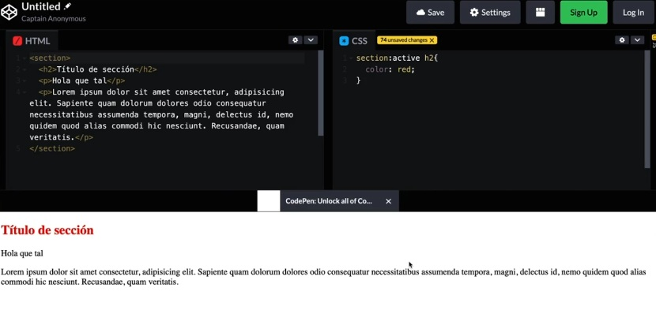
Ejemplo de uso de pseudoclase de interacción active
En este caso mientras estoy pinchando dentro de section con el ratón el h2 se pone rojo, en cuanto suelto el boton del ratón vualve a ser negro.
:focus Cuando estamos posicionados en un elemento, se dice que ese elemento tiene el foco, mientras que al pulsar TAB y saltar a otro, solemos decir que pierde el foco. También es posible ganar o perder el foco pulsando con el ratón en un elemento. Normalmente va a servir para los input de un formulario.
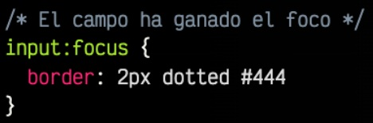
Ejemplo de uso de pseudoclase de interacción focus
Otro ejemplo:
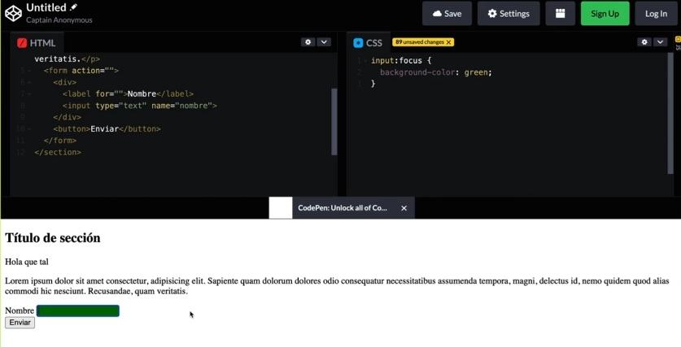
Ejemplo de uso de pseudoclase de interacción focus 2
Cuando yo pincho dentro del input, el color de fondo del input se pone verde, si yo pincho fuera pierde el foco y vuelve a ser normal.
:focus-within La pseudoclase :focus-within permite darle estilo no sólo al elemento que tiene el foco, sino también a los elementos contenedores relacionados con el elemento que gana el foco.
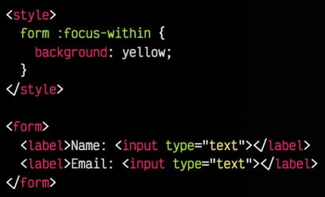
Ejemplo de uso de pseudoclase de interacción focus-within
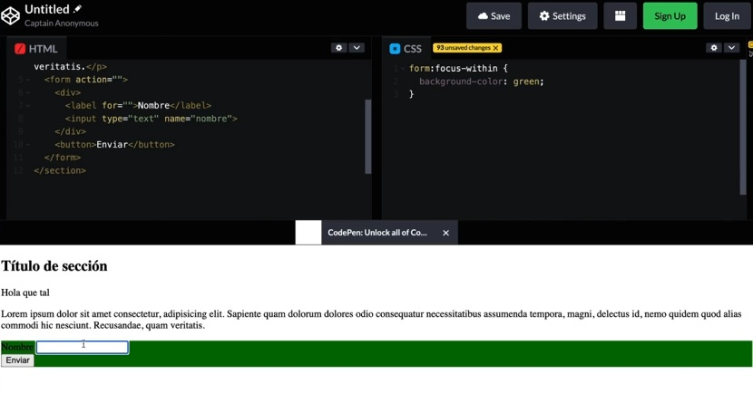
Ejemplo de uso de pseudoclase de interacción focus-within 2
En cuanto cualquier elemento tiene el foco (que sea un elemento descendiente del formulario) el color entero del formulario se pondrá verde.
Pseudoselectores de ubicación
Existen algunas pseudoclases orientadas a los enlaces o hipervínculos. En este caso, permiten cambiar los estilos dependiendo del comportamiento del enlace.
:link Permite seleccionar enlaces a páginas que aún no han sido visitadas por el navegador del usuario, lo que puede ser interesante para personalizar el color de este tipo de enlaces. Por defecto, estos enlaces sin visitar suelen ser de color azul.
Ejemplo:
a:link {
color: blue; /* Color azul para enlaces no visitados */
text-decoration: underline; /* Subrayado por defecto */
}
:visited También tenemos la pseudoclase :visited, que se utiliza para seleccionar y dar estilo a los enlaces que hayan sido visitados previamente en el navegador del usuario, es decir, que están en el historial del navegador. Es importante destacar que, por razones de seguridad y privacidad, los navegadores limitan las propiedades CSS que se pueden modificar con :visited. Generalmente, solo se permiten cambios en el color, color de fondo, color de borde y algunos aspectos del outline. Por defecto, estos enlaces suelen ser de color violeta.
a:visited {
color: purple; /* Enlaces visitados */
}